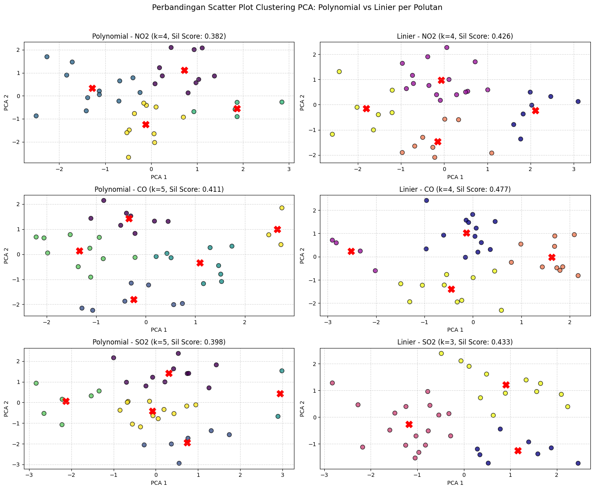

8. Clustering Fitur TSFEL & Klasifikasi Tutupan Lahan Sawah#
Dokumen ini menjelaskan alur pengolahan data polutan udara berbasis Database MySQL, reduksi dimensi multi-tahap (PCA), evaluasi kluster dengan Silhouette Coefficient, serta pemodelan klasifikasi tutupan lahan Sawah vs Non-Sawah berbasis citra satelit Sentinel-2A.
BAB 1: Clustering Fitur TSFEL Kualitas Udara (MySQL & Reduksi Dimensi)#
1.1 Metodologi & Alur Kerja#
Penyimpanan Database MySQL: Data 204 fitur TSFEL diunggah dan disimpan ke dalam dua tabel terpisah di database
basisda1_PSD-A-Interpolasi, yaituekstraksi_fitur_linierdanekstraksi_fitur_polynomial.Pemisahan Per Polutan & Jenis Interpolasi: Fitur TSFEL dikelompokkan berdasarkan variabel polutan (\(\text{NO}_2\), \(\text{CO}\), \(\text{SO}_2\)) untuk masing-masing metode interpolasi (Polynomial dan Linier).
Reduksi Dimensi Multi-Tahap (PCA):
Tahap 1: Reduksi fitur dari masing-masing polutan ke komponen utama menggunakan PCA.
Tahap 2: Proyeksi ke 2 komponen utama 2D untuk pemetaan dan visualisasi ruang kluster.
Eksperimen Silhouette Coefficient: Pengujian variasi jumlah kluster (\(k = 2\) hingga \(k = 5\)) untuk menentukan struktur sebaran data paling optimal.
1.2 Skrip Python Clustering & Perbandingan Per Polutan (Polynomial vs Linier)#
Koneksi MySQL gagal/offline: (pymysql.err.ProgrammingError) (1146, "Table 'basisda1_PSD-A-Interpolasi.ekstraksi_fitur_linier' doesn't exist")
[SQL: SELECT * FROM ekstraksi_fitur_linier]
(Background on this error at: https://sqlalche.me/e/20/f405). Menggunakan dummy dataset...

BAB 2: KLASIFIKASI TUTUPAN LAHAN SAWAH VS NON-SAWAH (SENTINEL-2A)#
2.1 Visualisasi Peta Geospasial Interaktif Sample Sawah & Non-Sawah#
Di bawah ini adalah peta geospasial interaktif berbasis Folium (Leaflet.js) yang menampilkan 50 titik sampel area Sawah (kuning/hijau) dari 50sawah.qgs dan 50 titik sampel area Non-Sawah (merah) dari Non Sawah asli.qgs[cite: 18, 19]. Peta ini dapat di-zoom, digeser, dan dipilih layernya[cite: 18, 19].
2.2 Model Klasifikasi 2 Kelas Sentinel-2A (.TIF)#
Proses ekstraksi reflektansi pita spektral B4 (Red) dan B8 (Near-Infrared / NIR) citra Sentinel-2A dimanfaatkan untuk menghitung Formulasi Indeks Vegetasi (\(\text{NDVI}\)):
=== HASIL EVALUASI MODEL KLASIFIKASI SAWAH VS NON-SAWAH ===
Confusion Matrix:
[[10 0]
[ 0 10]]
Classification Report:
precision recall f1-score support
Non-Sawah 1.00 1.00 1.00 10
Sawah 1.00 1.00 1.00 10
accuracy 1.00 20
macro avg 1.00 1.00 1.00 20
weighted avg 1.00 1.00 1.00 20